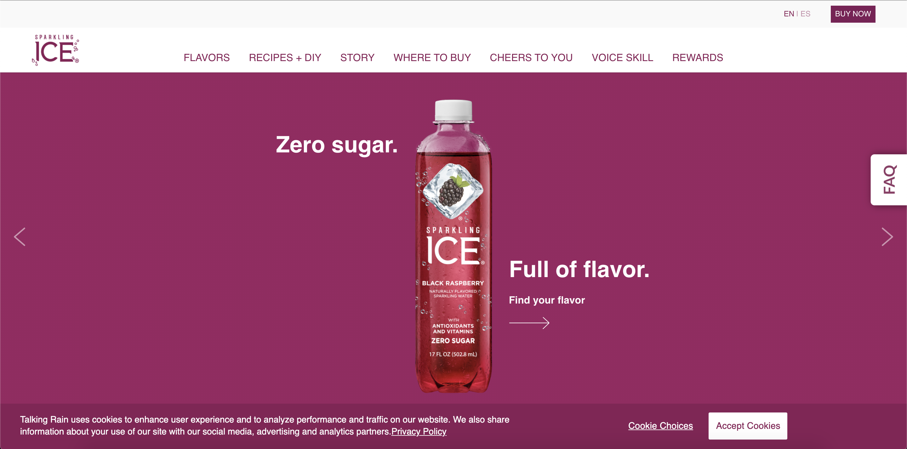

Chapter 1
While looking more into web animations, I found two definitions that helped me gain a better understanding and come up with my own definition of web animations. The first definition I found was “Web animations can happen as a visitor is scrolling through a web page to draw attention to an element, an animation that demonstrates a product, or a promotional web animation that shows off something entertainingly and engagingly” (Gregurec 2019). The second one that I found said, “Web animation is basically just making things move on the web and is necessary for creating eye-catching websites that enable better conversions and attract users to click, view, and buy things on your website” (Ogala 2020). After reading these definitions I gained a better understanding of what web animations are. My definition for web animations is an attribute on a web page that helps a visitor pay attention to an important element or the main focus on the page so it will keep visitors engaged.
A web animation sometimes allows users to scroll through by clicking arrows to see some of the products. The website home page for Sparkling Ice (2021), which is a drink I purchase a lot, has the main focus front and center of the new version of their drink they are selling, and it has arrows the users can click. When clicking the arrow it changes the style of the drink or the flavor as well as the background color and it has some facts or selling points surrounding the drink. The arrows are on the side so the user can go forwards through and go back as well.
